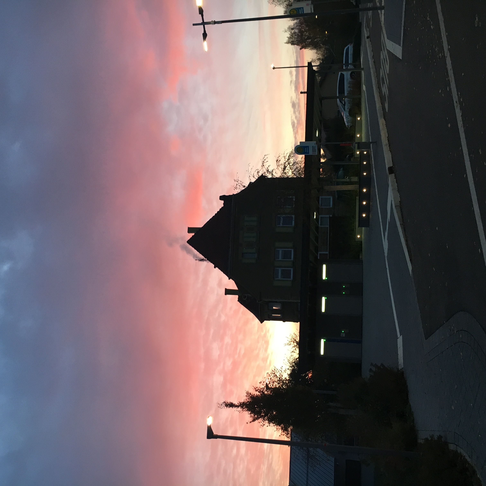

NOTE À PORTER
18.01.25 FALKEN IN MARRAKECH
Ich war ein Mal in dich verliebt, also werde ich es für immer sein.
24.10.24 DIE WELLEN BEI TAGESLICHT.
She wondered when she would ever not wonder whether he liked her enoguh for this to be her life?
23.04.24 ALDI IST MEIN WEINKELLER
Januar: Ein Glas Wein im Waschsalon
Februar: Paket für Nachbarn
März: Frostbeulen
April: Bock auf Twilight
Mai: Vorglühen auf Englisch
Juni: Prosecco im Feld
Juli: Nachts wach und nichts im Kühlschrank
August: Gras im Pflanzkasten
September: In love with the Postman
Oktober: Kaschmirpulli und Hangover
November: Pornhub und Eiscreme
Dezember: Fühlt sich an, wie frisch gemähtes Gras riecht.
26.01.24 REGEN AUF SYLT
It's funny how the last thing we ever did was kiss. Pull back, look up, turn around. Goodbye.
17.11.23 DIE LEUTE ESSEN ZU WENIG SOßE
The real, physical pain you feel behind your eyes when you’re about to cry. And the pain you feel that makes you cry, a non physical one but pain nonetheless.
22.06.23 GOLDEN TREES
We have to present a lot of faces to the world. When you get a relationship where you can drop all those faces that you have to show the world and paint a new face for each other. There is something beautiful in that.
11.11.22 POEMS
NEVER FOREVER
DISTANT ALIKE
ANTICIPATION ALWAYS IS
BUT NEVER ABOUT THE WHY
FAREWELL AND HELLO
WHEN DO WE GO AND WHERE
JUST SAW YOUR TEXT
I WAIT FOR YOU THERE
VOICES SOUND LIKE HOME
WE WILL NEVER GET OLD
MAYBE A LITTLE TIRED SOMETIMES
BUT ONLY TILL THE DARK
COLD AIR AND FLASHES SPARK
CAUGHT THE LAST TRAIN
ALMOST CAME TO CLOSE
TAKE MY HAND
BUT YOU CAN ALSO LET IT GO
07.08.22 DAS UNIVERSUM IM WEINGLAS
Das habe ich noch nie so gefühlt, sagte er. Nicht mal mit mir, denke ich und gehe beiläufig zu dicht an ihm vorbei zum Kühlschrank. Noch nie? Frage ich. Nicht so. Antwortet er. Wir wollen Freunde bleiben, klang es in meinem Kopf nach. Wir sind besser als Freunde, ich will unbedingt Freunde bleiben. Ich will Freunde bleiben. Ich will keine Freunde bleiben, ich will dich nackt sehen. Ich will keine Freunde sein. Ich will dich nackt sehen.
26.07.22 ALTE LIEBE, NEUER WEIN
Most of the stories in real life do not have a happy ending, so why should we strive for it? It will only be a disappointment in the end. We’re ok and I think sometimes it is enough to just be ok.
14.03.22 FRIENDS WITH BENEFITS OF THE DOUBT
Dich zu lieben ist wie am vorletzten Tag des Urlaubs endlich entspannt zu sein. Dich zu lieben ist wie auf dem Teil des Gehwegs zu sein, auf den die Sonnenstrahlen treffen. Dich zu lieben ist wie in die Tram in die falsche Richtung zu steigen. Dich zu lieben ist wie sich zu fragen, ob alle anderen nur so tun und auch die Kunst nicht verstehen. Dich zu lieben ist Mitte Juli einen kühlen Wind zu vergöttern, den man Mitte Dezember hassen würde. Dich zu lieben ist wie das Gefühl nach dem vierten Glas Wein zwischen Heiterkeit, Heimweh und unbändiger Lust auf Knutschen. Dich zu lieben ist wie ein Lieblingswort zu haben, nur um zu merken, dass man es immer weniger mag, umso häufiger man es sagt.
17.04.2021 COFFEE
If I can't touch the love I have inside me, I won't feel the love that is around me.
I'm sorry my confusion about what I want confused you about your worth.
I know you are scared, I'm scared too, but let's face love together, because I only want to feel it with you.
I will never be lost again, it took a while but found all the stars lead to you.
You're my Happy Hour, my coffee and sunshine, my hottie as in warm water bottle against pain and every other meaning. You're my favourite distraction and most of the time the only one I want to talk to.
26.05.2018 HOW DO I LOOK AWAY NOW THAT I HAVE SEEN YOU
He is not at war with me he is at war with himself and I’m in the middle of it.
Zeitrechnung wie im Geschichtsunterricht. Eine Zeit vor dir, eine Zeit mit Dir und eine Zeit nach dir. In der ich für immer leben muss.
Hast du mal überlegt wie unwahrscheinlich das mit uns überhaupt ist?
02.03.2018 NEVER
You've made it a bad thing for me now for even longer then it was a good thing.
07.08.2017 UNZUVERLÄSSIGE ERZÄHLERIN
Verpasste Chancen. Sich im Meeting freiwillig zu melden, um endlich mal zu punkten, aber es gibt auch so viel mehr zu tun. Dir endlich zu sagen, ich will mehr als Freundschaft, warum siehst du das denn nur nicht?! Tschüss zu sagen, für immer, vielleicht treffen wir uns an einem anderen Ort wieder. Aber an so etwas glaube ich nicht. Jedenfalls ist es schwer. Realistisch zu bleiben ist schwer, wenn ich doch so viel erreichen könnte, mit der Stiftkappe im Mund, den Bonus in Gedanken schon wieder investiert, für den ich noch keinen Finger krumm gemacht habe. Deine Lippen endlich für mich zu haben, obwohl ich dir morgens auf dem Gang kaum in die Augen schaue und lieber die Kaffeetasse umklammere. Noch ein Mal deine Hand zu drücken und dir eine gute Reise zu wünschen, obwohl ich dich im letzten Jahr nicht mal zum Geburtstag angerufen habe. Verpasste Chancen sind an jeder Ecke, der einen widme ich keinen Gedanken, der anderen hänge jeden Tag nach. Warum?
28.08.13 GLAUBST DU AN AUTOKORREKTUR?
Wenn du küsst, wohin zuerst? Legst du Obst in den Kühlschrank? Schläfst du mit dem Kopf zum Fenster? Passiert es, dass du dich an dir selbst stößt? Und schenkst du etwas, obwohl du sagst, du wirst es nicht? Erinnerst du Geburtstage? Schneiden oder knipsen? Hast du jemals einen Brief geöffnet, der nicht für dich bestimmt war? Legst du dich nach dem Duschen am Morgen noch einmal hin? Wärmst du dein Handtuch an? Was ist dein Lieblingswort? Weißt du, warum Blätter schwarz werden? Wann lässt du das Licht aus? Hast du dich schon einmal von oben gesehen? Zu welchem Moment möchtest du noch einmal zurück? Gibst du Dingen Namen? Telefonierst du gern? Magst du Clowns? Hast du eine Seite? Lässt du mich ausreden? Macht deine Kniescheibe ein Geräusch? Wenn du raus musst, gehst du auch? Magst du deine Stimme? Wen erkennst du nicht wieder? Auf was könntest du am ehesten verzichten? Die Hände müssen sich verstehen, oder? Verwechselst du links und rechts? Schreibst du Listen? Was ist unter deinem Bett? Und weißt du, ob das noch Flut ist oder schon Ebbe? Wo ist dein Unterschlupf? Wie viel gibst du aus? Wenn du ein Gewässer wärst, wie sähe dein Ufer aus? Wann liest du? Wirst du es verkraften? Und lässt du immer einen Rest übrig? Welchen Durchmesser hat dein Kopf? Trinkst du genug? Hast du schon einmal einen Gedanken gedacht, der so wertvoll war, dass du ihn in dir drin nur geflüstert hast? Machst du Dinge eher für dich oder für andere? Findest du auch, dass mein Zeigefinger am besten auf die Stelle hinter deinem Ohrläppchen passt? Hast du schon einmal jemanden beerdigt? Findest du im Abspann den lustigsten Nachnamen? Spielt Reihenfolge eine Rolle? Wo liegt dein Schlüssel? Was bringst du mit von deiner Reise? Und vor allem: Was nicht? Wenn ich sage, ich möchte gehen, lässt du mich? Ist das noch Stolz oder schon Neurose? Wenn du einen Stein mitbringen sollst von einem fernen Strand, wie suchst du den aus, der es wert ist? Warum bleibst du so lange? Hast du schon einmal eine Telefonnummer angerufen in der Hoffnung zu hören, wie ein Gletscher schmilzt? Wie viel kannst du ertragen? Ist es das, was du das ganze nächste Jahr machen willst? Was ist deine Durchschnittsgeschwindigkeit? Wann geht dein Nachbar zu Bett? Wem wünschst du Gesundheit? Wie viele Millimeter passen in eine deiner Wimpern? Bist du schüchtern eigentlich? Möchtest du deinen Namen behalten? Seite, Rücken oder Bauch? Fragst du um Hilfe? Wenn du deinen Schlüssel vergessen hast, wo gehst du hin? Wenn ich fort bleibe, was suchst du dir aus von all meinen Sachen, was nimmst du mit? Wann spielst du? Ein Jahr immer allein oder ein Jahr immer zu zweit? Hast du schon einmal etwas erfunden, das man anfassen kann? In deinen Kisten, weißt du, was drin ist ohne nachzusehen? Ernst oder erwachsen? Tasse oder Glas? Nasen- oder Zahnfleischbluten? Wenn du sagst, was du glaubst, was ich denke, sagst du dann eigentlich, was du gerade fühlst? Die Hand im Nacken oder an der Hüfte? Hast du vielleicht irgendwo eine Vorstellung von Romantik liegen, die noch nicht angelaufen ist? Gibst du dich zeitweise her? Glaubst du, das reicht? Wie viele Spiegel besitzt du? Wenn ich sage, ich möchte gehen, lässt du mich? Hast du schon einmal etwas unter deinem Laken gefunden? Und wenn du nachts aufwachst, wo liegen deine Hände dann? Bist du das letzte Wort oder das erste? Und sag, wie oft im Leben sieht man sich wieder? Hast du dich so hingestellt, dass das Glück dich finden kann? Und wenn es brennt, was nimmst du zuerst? Werde ich irgendwann deine Antworten auf all diese Fragen kennen? Hast du angerufen? Wenn ich dir erzählte, dass die Aufnahme einiger Glühwürmchen mich zu Tränen gerührt hat, würdest du es verstehen? Zählst du die Sekunden zwischen Blitz und Donner? Glaubst du, dass alles schon einmal gesagt wurde? Tust du nur so? Haus oder Hof? Gibt es jemanden, der sich auf dich verlässt? Bei wem hältst du Wort? Hast du ein Foto von dir, ein richtiges auf Papier? Wirfst du das ungeöffnet weg? Wer kennt deine Passworte? Und möchtest du, dass auf deiner Beerdigung eine Rede gehalten wird? Wenn ja, von wem? Magst du den Geruch von Tankstellen? Machst du das Licht aus, wenn es regnet? Wer gießt deine Blumen? Weißt du noch, was du geträumt hast in der ersten Nacht in deiner jetzigen Wohnung? Tun abgerundete Ecken weh? Was blendet dich? Bist du schnell genug? Hättest du lieber einen anderen Namen? Welche Farbe gefällt dir an Bäumen am besten? Und wenn deine Augen am Morgen noch klein sind, siehst du mich trotzdem? Hast du schon einmal für jemanden Krumen ausgelegt, damit er den Weg findet? Und wenn du eine Hand auflegst, wird es darunter warm oder kalt? Wenn dein Ziel zwischen zwei Straßenbahnstationen liegt, steigst du dann vorher aus oder nachher? Duschst du morgens oder abends? Und wenn du einen Herzschlag hörst, fällt dir ein Lied dazu ein? Hast du dir mal gewünscht, ein Tier zu sein? Wie lange wirst du bleiben? Von was wirst du dich nie trennen? Und wem legst du die Hand auf den Rücken, wenn du gehst? Wie alt wirst du werden? Und ist in deiner Tasche noch Platz? Wenn ich dir sage “We’ll love again, just not each other“, wirst du das hinnehmen? Wirst du mir glauben? Würdest du warten? Woran hat’s gelegen? Und wie viele Wochen lebst du hier schon? Genau hier? Welche ist die Herz- und welche die Kopf- und welche die Lebenslinie und wieso gehen sie eigentlich kaum ineinander über? Wann hast du dich das letzte Mal verbrannt? Handelst du runter? Bist du fair? Wie lange ist es her, dass du eine Postkarte geschrieben hast, eine ohne Urlaub? Bist du besorgt? Bist du der letzte deiner Art? Erinnerst du Stimmen? Wie lange kannst du die Luft anhalten? In Menschenmengen, hältst du es da aus? Darfst du Dinge, die andere nicht dürfen? Wenn das hier kein Sommer ist, was ist es dann? Wenn du jetzt ein Lied aussuchen solltest, welches würdest du wählen? Und wenn du eine Stunde zurückholen und noch einmal leben könntest, wer wäre dabei? Bist du lichtempfindlich? Ist dieses Bild dir wichtig? Findest du auch allein hin? Welche Zeile hast du wohl am häufigsten gelesen? Weißt du, wer über dir wohnt? Denkst du immer noch darüber nach? Was hast du verliehen und nie wieder bekommen? Hast du noch etwas, das jemand anderem gehört? Ist das ein Riss oder ein Kratzer? Füllst du auf oder kaufst du neu? Mit Sahne? Erschrickst du manchmal vor dir selbst? Kannst du nähen? Wem hast du das letzte Mal guten Morgen gesagt? Weißt du, wie es deinen Eltern geht? Hast du dir schon einmal etwas gebrochen? Weißt du noch, welches Wort das letzte war zwischen dir und mir? Das Geräusch von Tischtennis- oder das von Basketbällen? Gehst du in den Zoo? Triffst du all deine Entscheidungen allein? Was wäre besser? Bei was zuckst du zurück? Kapuze oder Schirm? Kannst du das präzisieren? Wann ist es zu spät und wann noch zu früh? Im Fieber, träumst du da? Erschüttert oder berührt? Hältst du dicht? Und ist man gut aufgehoben bei dir? Wo bist du am 31.12. 2035?Und kennen wir uns dann schon? Oder noch? One day very soon? Wann hast du das letzte Mal geflucht? Ziehst du manchmal deine Unterwäsche falsch herum an? Auf den Keksen Mandeln oder Zucker? Auf dem Kuchen Mohn oder Streusel? Erkennst du dich abends im Spiegel? Wachst du manchmal auf und hast den Traum vergessen und nur noch seine Farbe im Kopf? Wie viel ist genug? Welchen Namen hättest du dir gegeben, wenn man dich gefragt hätte? Vertraust du dir? Wer hilft dir beim Druckausgleich? Was war dein größter Fehltritt? Und wenn du Blumen bekommst, wie viel schneidest du ab? Manchmal, wenn dein Bein einschläft, vermisst du es? Wem schreibst du nachts? Und wem nie wieder? Wo findet man dich auf einem Konzert? Minuten oder Stunden? Wann löst du dich auf? Wie viel bist du dir wert? Wo machst du deinen Frieden? Kennst du mich? Willst du das? Und wie lange brauchst du dafür? Könntest du stehen ohne zu schwanken? Wann kannst du nicht schlafen? Wenn ein Flugzeug startet, schließt du die Augen? Can we? Shall we? One day very soon? Was ist das in dir? Und was deine Handschrift? Wann wirst du wach am Wochenende? Und von wem nicht? Welche Farben siehst du, wenn du die Augen schließt? Wo warst du noch nie und wo willst du niemals hin? Wie lange kannst du das Gleichgewicht halten und dich beieinander? Welchen Teil von dir trifft die Sonne vorne an der Ecke als Erstes? Mit welchem Fuß stehst du auf? Mit oder ohne Kohlensäure? Rucksack oder Tasche? Oder niemals Gepäck? Schließt du nachts dein Fenster und lässt du auf dem Teller einen Rest übrig? Was stand auf dem Zettel? Wann lässt man dich besser allein und wann geht man lieber nicht fort? Ist diese Falte dort schon immer da? Und warum heißt sie Falte dann und nicht Schatten? Welche dieser Socken gehört nicht dir? Wo bist du, wenn du nicht bei dir bist? Bist du jemals aus gutem Grund irgendwohin zurückgekehrt und wenn ja, warum? Was ist dir vor dir selbst nicht unangenehm? Was sind deine Knoten? Wann beginnt dein Laut und wann dein Leise? Und wie viele Erwartungen trägst du herum? Was betrifft dich? Ist dir warm? Welche Frage wirst du niemals jemandem stellen aus Angst vor der Antwort? Wie heißt dein Buch? Blätterst du Magazine von vorne nach hinten oder von hinten nach vorn? Wo siehst du hin, wenn du wartest? Willst du mal probieren? Könntest du bitte deinen Zeh aus meiner Nasen nehmen? Hast du dir das vorher genau überlegt? Ist das wirklich eine Krise? Und weißt du noch, wo du stehen musst, damit der Mond genauso groß ist wie dein Daumenfingernagel? Kannst du mir morgens Witze erzählen oder vorlesen oder so tun, als wärst du schon viel wacher als ich, ohne anstrengend zu sein? Ginge das? Stehst du immer ganz vorne oder hinten an der Bar? Und für wen ist dein rechter rechter Platz? Was hast du geklaut? Und was ist passiert, wenn ich fragen darf? Hast du gut geschlafen? Wann das letzte Mal? Läufst du links oder rechts von Menschen, davor oder dahinter? Wann erdest du dich? Wo beeindruckt dich Natur am meisten? Eine oder zwei Kugeln, Sahne oder Streusel? Ziehst du am Meer die Schuhe aus und wie weit gehst du hinein? Was schreibst du mit dem Finger auf Scheiben? Magst du Unsicherheit? Und wenn du kannst, machst du? Wenn du jetzt könntest, würdest du wirklich? In welchen Sprachen kannst du träumen? Und wie viel verstehst du davon? Hast du jemals eine Bedienungsanleitung gebraucht? Wo würdest du anhalten? Kannst du dir vorstellen, alles zu beichten? Wer geht als Erster? Und wie viel sind drei Meter? Hast du jemals versucht, etwas nachzuholen? Sprichst du mit dir selbst? Wo denkst du am besten? Und wo gar nicht? Wann ist es zu spät? Wie viele Regenschirme hast du schon vergessen? Und welches Muster hatte dein erster? Wirst du heiraten? Wasser oder Strom? Decke oder Kissen? Das Innere oder die Rinde? Wohin kommt das Streugut im Frühling? Und wie viel hebst du auf? Hast du jemals etwas von einer Liste gestrichen, die älter war als ein Jahr? Kannst du dir vergeben? Sitzen oder laufen? Laut oder leise? Wer heißt wie du? Wo gehörst du hin? Karos oder Linien? Stabile Seitenlage, kannst du die? Und auch innen drin? Welchen Dingen gibst du Namen? Und wen wirst du nicht los? Kopfüber oder unter Wasser? Kommst du jemals darüber hinweg? Aus- oder einatmen? Malst du beim Telefonieren? In welchen Kellern steht noch etwas von dir? Kannst du mir sagen, wie oft ich das noch erleben werde? Stet oder unstet? Land oder Stadt? Hast du schon einmal ein Glas poliert? Dein Kopf und du, habt ihr eine Abmachung? Und was sagt dein Bauch dazu? Wann schämst du dich? Kannst du mit den Ohren wackeln? Und mit dem kleinen Zeh? Bus oder Bahn? Wie viel Überwindung kostet es dich, ehrlich zu sein? Wo fängt das an? Was ist das für ein Tier und kannst du es abstreifen? Wogegen kämpfst du? Und wofür? Würdest du sagen, dass es okay ist? Würdest du sagen, du bist ein Freund? Verschränkst du deine Füße im Schlaf? Ist es dunkel, wenn es du rausschaust oder hell? Ziehst du den Vorhang immer ganz zu? Erschreckst du dich, wenn du aufwachst und jemand liegt neben dir? Wann hast du das letzte Mal jemanden weinen gesehen? Erinnert dich das an was? Weißt du aus dem Kopf, was in deinem Kühlschrank liegt? Was ist deine Trophäe? Und wo dein Schlüssel zum Keller? Wen möchtest du vergessen, aber schaffst es nicht? Und wer hat dir deinen ersten Witz erzählt? Wer die einzige Lüge? Trägst du zwei Paar Socken? Sagst du deinem Nachbarn Hallo oder guten Tag? Brauchst du Zucker? Wie viele Armbanduhren liegen in deinem Schrank? Wer wohnte hier vorher? Frierst du schnell? Kennst du die Geschichte deiner Familie? Woher kommst du eigentlich? Und wen triffst du morgen? Hast du jemals gedacht in der dritten Sekunde, das könnte er sein oder sie, die Antwort auf alle Fragen, und dann fuhr die Bahn weiter? Wer heiratet als nächstes? Kannst du in Zügen schlafen? Was rüttelt an dir? Hast du dich schon einmal mit bloßen Händen bis zum Rand deines Herzens gegraben? Wo fängt dein Pathos an? Was siehst du bei geschlossenen Augen und wer hat dir das beigebracht? Wann hast du damit begonnen, auf der Hut zu sein? Und glaubst du, jemand hat Schuld? Ende oder Anfang? Wort oder Zahl? Unten oder oben? Bist du dir sicher? Kaufst du Rahmen mit echtem Glas? Kämmst du dir abends die Haare? Hast du schon einmal geglaubt, neben jemandem nicht mehr atmen zu müssen? Und was rührt dich? Hast du heute schon einmal genickt? Wie viele Bücher sind zu viele? Und wie viele Lieder wirst du noch brauchen? Kannst du mir glauben oder tust du nur so? Ist noch Zeit? Meinst du wirklich? Und gestern, was war das letzte, an das du gedacht hast - und warum nicht schon früher? Schaffen wir es, uns zu behalten? Abends manchmal, liegst du da im Sterben? Was denkst du morgens als Erstes? Und wie lange siehst du im Spiegel dir selbst wirklich in die Augen? Singst du unter der Dusche? Sind wir eine fixe Idee oder ein Plan, eine Karte oder ein Puzzle? Wann hast du Fieber? Kannst du hören, wenn ich vor der Tür stehe? Wärmflasche oder Kühlakku? Wie schnell ist deine Atemfrequenz? Und weißt du noch, wann du gewusst hast, wer du bist? Würfelst du lieber mit einem Würfel oder mit zweien? Welche Namen tragen deine Kinder? Und wann wachst du nachts auf? Stehst du manchmal einfach und gehst? Wann gibst du Applaus? Wie lange kämpfst du schon und wie lange hältst du noch durch? Was war dein erstes Lied? Bettdeckenränder unter den Körper oder lose darüber wie ein Blatt Papier? Kannst du gewinnen? Wie alt wirst du einmal werden und wie alt wirst du immer sein? Ja oder nein oder vielleicht? Und was machst du morgen? Wie hoch liegt dein Staub? Kannst du mit den Ohren wackeln? Wen vermisst du am liebsten? Wann bist du leise? Wie nennst du den Zeh neben dem großen? Merkst du, wenn du weinst? Welche Erinnerung willst du zurück? Und wo liegt dein Schatten? Winkst du manchmal, wenn niemand es sieht? Wann sind wir da? Und glaubst du das wirklich?
Éphémère

